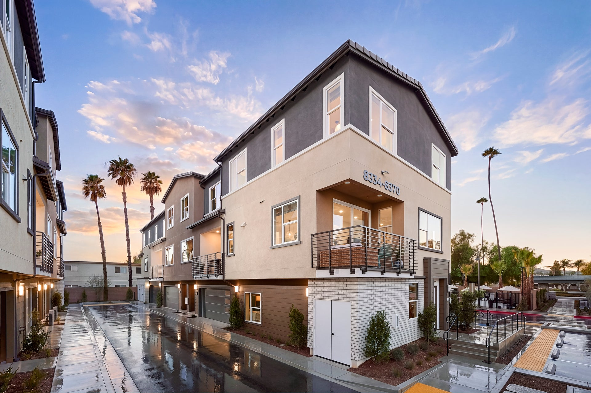
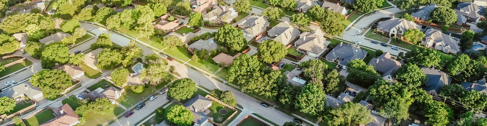

PropTech
do bairro à carteira.
Como a tecnologia transforma o imóvel de tijolo em ativo financeiro — da leitura de dados da rua até uma carteira diversificada de fundos imobiliários.
A rota em seis movimentos.
Entender o ativo, enxergá-lo como dado, industrializar a transação, torná-lo investível em frações — e administrá-lo como carteira.
O imóvel como ativo
Ticket, liquidez, opacidade e custo — e como o imóvel compete com ações e renda fixa.
O bairro como dado
Preço/m², vacância, days-on-market — mapa de calor interativo e mini-simulador de AVM.
A stack PropTech
Marketplace, iBuying, crédito digital, fractional e tokenização — camada por camada.
Do imóvel ao papel
FIIs: o veículo que leva o bairro à bolsa — universo em scatter interativo.
Construindo a carteira
Perfis em radar, ciclo de juros com slider de Selic e simulador de patrimônio.
Riscos & tendências
Matriz de riscos, tributação, cases brasileiros — e checklist pontuado.
Um ótimo ativo,
um péssimo produto.
O imóvel gera renda e proteção patrimonial há séculos — mas como produto financeiro carrega atritos que a tecnologia existe para atacar.
Ticket alto
Centenas de milhares de reais concentrados em um único imóvel — e um único bairro.
Iliquidez
Vender pode levar meses, em prazo incerto e sensível ao ciclo.
Opacidade de preço
Sem cotação diária: valor depende de comparáveis escassos.
Custo de transação
ITBI, registro, corretagem — dígitos inteiros a cada ida e volta.
Onde o imóvel ganha e perde.
Imóvel direto — e FII — lado a lado com ações e renda fixa: os atritos viram linhas de uma tabela.
arraste para o lado →
| Dimensão | Ações | Renda fixa | Imóvel direto | FII |
|---|---|---|---|---|
| Ticket mínimo | Baixo | Baixo | Muito alto | mínimo |
| Liquidez | diária | No vencimento | meses | diária · B3 |
| Gestão | Pessoal | Nenhuma | ativa e local | profissional |
| Renda recorrente | Variável | Cupom contratado | Aluguel | mensal |
| Proteção inflação | Indireta | Depende do indexador | IGP-M / mercado | Depende do fundo |
| Diversificação | Por empresa | Por emissor | zero — um imóvel | por carteira |
O FII herda as virtudes do imóvel (renda, inflação) e importa as da bolsa (fração, liquidez) — com os riscos dos dois também.
A confluência que
criou a onda.
- Dados públicos digitalizados — matrículas, cartórios e registros viram base de cálculo.
- Crédito digitalizado — da agência para o celular, com decisão em dias.
- IA e AVMs — precificação automática, auditável e instantânea.
- Mudança de hábito — comprar, alugar e investir sem sair de casa.
Toda decisão imobiliária
é uma aposta regional.
Antes de ser um ativo na carteira, o imóvel é um conjunto de variáveis de rua e de bairro.

Preço por m²
Comparáveis georreferenciados revelam microclimas de valor no mesmo CEP.
Days-on-market
Velocidade de venda mede a liquidez implícita da região.
Vacância
Oferta vagante antecipa pressão sobre aluguéis e renda.
Oferta nova
Lançamentos preveem concorrência futura pela demanda.
Infraestrutura
Transporte e serviços mudam o eixo de valorização.
Demanda local
Perfil demográfico define o produto certo por rua.
Quatro métricas,
oito regiões.
Passe o cursor nas células. Assim um gestor de FII escaneia um mercado antes de comprar um ativo.
- Valorização 12m — tendência importa mais que nível.
- Vacância — oferta vagante comprime aluguel e renda.
- Days-on-market — maior prazo, menor liquidez.
- Oferta nova — pipeline de concorrência futura.
O preço justo
em segundos.
O Automated Valuation Model cruza transações, atributos e entorno. Experimente — o raciocínio (simplificado) por trás de iBuying e análise de fundos.
Transações + atributos
Vendas recentes, área, tipologia, padrão, posição e entorno.
Regressão / ML
O modelo aprende o preço implícito de cada característica.
Faixa ± intervalo
Estimativa com banda de confiança, atualizada a cada venda.
Cinco camadas,
um atrito por vez.
Clique nas camadas para explorar — da descoberta ao investimento fracionado.
Investimento
Portais 1.0
Anúncios digitais organizam a descoberta e geram o primeiro dado de oferta.
Aluguel reinventado
Sem fiador, garantia digital e scoring — a locação abre o setor.
iBuying & unicórnios
Oferta firme por AVM e bilhões em captação para compra online.
Crédito & dados
Crédito digital, home equity e AVMs viram infraestrutura.
Fração & IA
IA generativa na ponta e o PF descobrindo a carteira de FIIs.
Hiperintermediação
por dados.
A promessa não é eliminar o intermediário — é reconstruí-lo em cima de dados.
Corretor ampliado
Seguem no centro — agora instrumentados por dados regionais.
Matching
Compatibilidade reduz visitas infrutíferas e acelera o pareamento.
Financiar virou API.
Proposta digital
Fluxo único, sem papel, sem agência.
Análise com sinais
Scoring + dados alternativos de renda.
Garantia por AVM
Valor estimado em segundos, com banda.
Closing digital
Semanas de cartório em dias.
Originação digital
Proposta, documentação e assinatura 100% remotas.
Crédito as a service
O crédito dentro do fluxo da compra.
Home equity
Imóvel quitado como garantia — liquidez sem vender.
O imóvel em frações.
Entre o imóvel inteiro e o FII listado, um espectro de veículos. Arraste o cursor.
arraste para o lado →
| Veículo | O que expõe | Ticket | Liquidez | Regulação |
|---|---|---|---|---|
| CRI / LCI | Recebíveis de crédito imobiliário | Médio | vencimento | CVM |
| Crowdfunding | Projetos de desenvolvimento | Baixo | baixa | CVM |
| Fractional (SPE) | Fração de imóvel rentável | Baixo–médio | baixa | Societário |
| Token imobiliário | Fração em blockchain | Baixo | emergente | Em construção |
| FII listado | Carteira inteira | Mínimo | diária · B3 | CVM · plena |
O mesmo imóvel,
mais líquido?
Mercado 24/7
Secondary sempre aberto, settlement instantâneo, acesso global.
Regulação pendente
Liquidez real depende de demanda institucional.
Experimental
Exposição pequena, contraparte auditada, tese explícita.
O bairro
vai à bolsa.
Um veículo listado e regulado que concentra imóveis inteiros — e os devolve ao investidor em cotas líquidas de poucos reais.
Tijolo
Lajes, shoppings e galpões: aluguel direto por IGP-M.
Papel
Carteira de CRI e LCI — renda contratada, sensível a juros.
Fundo de fundos
Cotas de outros FIIs — diversificação num ticker.
Desenvolvimento
Capital para construir o ativo — mais risco, mais retorno.
O painel de bordo
do cotista.
Ler um FII é ler o bairro através do papel. Passe o cursor nos pontos.
- P/VP — desconto persistente pede investigação; prêmio pede tese.
- Dividend yield — compare contra a taxa livre de risco.
- Vacância — a variável do bairro comprimindo a renda.
- Indexador e prazo — onde o ciclo de juros mora.
- Liquidez — volume define o custo de entrar e sair.
- Superior esquerdo — desconto com renda: investigar por quê.
- Superior direito — prêmio: a tese precisa ser growth.
- Linha de baixo — compete com o CDI e perde.
A Selic é o vento contrário.
Arraste a Selic e veja quando o yield do fundo volta a ficar atraente frente ao CDI.
- Papel é o mais sensível: duration longa.
- Tijolo amortecede — contratos e reversão.
- Horizonte longo: juro alto = janela de desconto.
De um imóvel só
à alocação.
O bairro lido como dado, embalado em cotas — combinado em carteira com objetivo, prazo e risco explícitos.
Alocações e perfis ilustrativos — não são recomendação.
A renda composta
da carteira.
Ajuste as premissas e veja o patrimônio evoluir — juros sobre juros fazendo o trabalho pesado.
Simulação didática: aportes ao fim do mês, rendimento reinvestido, sem inflação, IR ou custos — o objetivo é visualizar o efeito composição.
Não colocar o bairro
numa cota só.
Por tipo
Tijolo + papel + FoF: regimes de risco diferentes no mesmo porta-malas.
Por geografia
SP, Rio, interior e logística: ciclos dessincronizados.
Por prazo
Curto + longo: escada de vencimentos renova a renda.
O que pode dar errado.
Carteira madura sabe qual risco está comprando em cada cota.
arraste para o lado →
| Risco | Como aparece | Mitigante | Severidade |
|---|---|---|---|
| Vacância | Oferta excedente esvazia lajes e galpões | Diversificar geografia; monitorar estoque | alta |
| Taxa de juros | CDI alto reprecifica papel e comprime payout | Escada de vencimentos; misturar tijolo | alta |
| Liquidez | Fundo pequeno negocia com spread largo | Priorizar volume; limitar posição | média |
| Inadimplência | Inquilino relevante atrasa ou devolve | Concentração < 20% por fundo | média |
| Regulatório | Mudança tributária ou de distribuição | Não alavancar tese fiscal | média |
| Gestão | GA fraca paga caro por ativo ruim | Histórico de aquisições e taxas | baixa* |
*Baixa frequência, alto impacto — o histórico do gestor é o único antídoto.
O detalhe que muda a conta.
- Rendimentos isentos para PF quando o fundo atende aos requisitos (100+ cotistas, mercado organizado).
- Distribuição obrigatória de 95%+ do resultado semestral.
- Ganho na venda: IR de 20% só sobre o lucro.
- Não é isenção universal: fora dos requisitos, tributa na fonte.
- Day trade de cota não aproveita a isenção — e adiciona risco.
- Regra pode mudar: a tese deve sobreviver sem o subsídio.
Resumo educacional — confira as regras vigentes antes de decidir.
Quem está construindo isso.
QuintoAndar
Unicórnio sobre aluguel sem fiador e dados proprietários de precificação.
Loft
Oferta firme por AVM, reforma padronizada, revenda digital.
Hedge
Inteligência imobiliária: AVMs e índices que alimentam bancos e fundos.
Tera
Crédito imobiliário digital, de ponta a ponta.
Ceptis
Home equity originado por tecnologia.
B3 & gestores
Centenas de FIIs listados profissionalizando a renda do bairro.

Para onde a stack está indo.
Todas apontam na mesma direção: mais dado, menos fricção, mais fração.
IA generativa
Busca conversacional e documentos em segundos — a intermediação vira copiloto.
Dados alternativos
Satélite, mobilidade e consumo estimam vitalidade do bairro.
Embedded finance
Crédito e seguro dentro do fluxo — o produto some na experiência.
Fração regulada
Tokenização rumo a arcabouço claro — o imóvel a público, cota a cota.
Due diligence
com pontuação.
Marque o que você já verifica hoje — as perguntas do bairro e as do papel.
Cada item é um risco que você deixou de carregar sem saber. A meta não é 10/10 — é saber quais itens está deliberadamente pulando.
A tecnologia comprime a distância
entre a rua e o portfólio.
O bairro é informação
Quem lê preço, vacância e velocidade primeiro decide melhor.
A stack industrializou o atrito
Cada fricção ganhou uma camada de tecnologia em cima.
O FII leva o bairro à carteira
Fração, liquidez e renda fecham o ciclo.